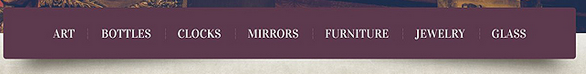
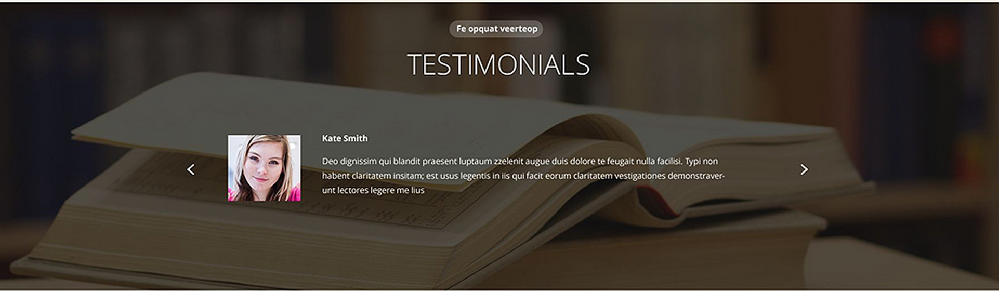

About Me
Hello Everyone. My name is James Woods, no relation, Family Guy jokes welcome. I work for Adobe in my professional life but I work on nothing related to what most people think when they think Adobe. In fact, if it weren't for this degree I would probably rarely touch Photoshop or Illustrator. Can you believe it. I do use Acrobat all the time though but I am sorry to say I cannot help you troubleshoot it. Man, what good am I! I also apologize in advance for all of the requests to update your software. So what do I do exactly? My experience is on the Digital Marketing side of the house, Analytics and A/B testing etc. My hobbies include...well finishing my homework at FullSail.
Home Page Layout
Target Audience
Given the non-traditional layout this site would almost certainly appeal to individual consumers B to C and not businesses, B to B. No gender differences here but the age range would not be all inclusive if certain premises are taken as true, namely younger internet users ages 6 to 40 invite instead of shun non-traditional layouts and other novelties whereas older users 40+ prefer what they have grown up with and what mirrors traditional print layout. A case could be made however that older users also enjoy novelty but perhaps only in moderation.
Client/User Needs
The client need here is to present only three key pieces of information, the company's name, mission statement and menu with an emphasis on the mission statement. That emphasis is made by the size and placement of the mission statement on the page. Users need to be able to understand what the company is all about and then begin exploring their offerings should they find the content appealing.
Critique
The layout must offer a very nice surprise for folks and cause them to perk up and pay attention. It is a left to right design as opposed to a top down. You certainly couldn't do it the other way, right to left, at least not for most cultures, there would be too much of a risk of loosing your audience before they even begin. The emphasis on the mission statement is interesting and to my mind reinforces a targeted consumer audience, and in this case an audience that takes the time to casually peruse the site instead of perform a hit and run dash for information or a quick transaction. If repeat visitors were identifiable on the site it would make sense to exchange the mission statement with something else of similar or only slightly less importance or get rid of it all together. Once your users are repeating visits it makes sense to now bring new content and transactional items front and center but as a landing page for new users the design certainly catches the eye by virtue of its non-traditional layout.
Navigation
Target Audience
Given that the site is for the selling of antiques I would have to say that they are targeting an older and more affluent crowd ages 40+ and perhaps history buffs and professors with a fair amount discretionary income. I would imagine if they had a partnership with the antiques roadshow they could really broaden their audience provided their inventory catered to all price ranges.
Client/User Needs
The client would like to generate revenue through the sale of antiques. The users need a readily identifiable way of localizing their content views to the different categories of antiques they may be interested in purchasing.
Critique
The positioning of the navigation bar on the page below the hero image instead of at the top or the left works well because as soon as the page loads, at least on a standard 17 inch screen it is right at eye level. The subtle shadow effect behind the bar makes it appear to come off the page but upon a second glance only at the edges. The position and shadow effect make the bar stand out but its flat design tempers the effect so it does not become gaudy. Taken together a nice balance has been achieved. If any more 3d effects and/or aggressive color gradients were applied the end result would be a component that is out of place and that distracts from the components true purpose. The Serif font adds a little class to the nav titles and the mahogany background compliments that class with a sense of refinement. The other intersting thing about the navigation bar is that it is more of a product finding method then a navigation bar in that menu is focused purely on product categories and doesn't include links to Home or About Us. The intent is to as simply and straighforwardly as possible allow you to begin your hunt for anituques.
Testimonials
Target Audience
Young people, 26 and under and parents with kids of reading age.
Client/User Needs
The client would like to get visitor to become a library card holders and motivate them to get into reading by showcasing popular books and offering unique services. Testimonials of these offering and services are one way to pass the message along. The visitors want to see just what this library has to offer above and beyond the checking out of media
Critique
The testimonial area stands out for a couple of reasons, more so than many other sites. First, if you happen to take a look at the overall site design it sits within a vertical band of alternating and contrasting elements, each of which extends to either end of the page. The content above and below testimonials has a white background. So the contrast with adjacent elements and the total size devoted to it definitely marks this as a key feature of the site, even if it is further down the page.
Nav/Layout

Target Audience
Medium to Large businesses with 10+ M gross annual revenue that would like have a professional design and development firm to produce their website.
Client/User Needs
Ultimately the client would like to be able to sell their design and development services to businesses. With regards to this particular page/nav layout the client wants to provide a way for their users to organize the content tiles that allow the users to interact with the site. They would also like the users to be able to interact with initial truncated content without moving the user to another page. Once the user is satisfied that they have found want they want they can then choose to be directed to another page if they require more information. The user needs to be able to engage with all of the various features of the site, some of which are more frequently used then others. Examples include shopping for ecommerce solutions, researching use cases and reviewing Twitter posts.
Critique
I have to admit, at first I had absolutely no idea what this site was about or to whom it was targeted. Part of that is due to French localization I am sure but even if I encountered the site in English at first it might have taken me a second. A good designer would say that is reason enough to walk away and they would probably be right but I chose to give the site a deeper look. I have to say, other than the concept of a grid, in this case a 4x10 grid to be exact; no other design principles stand out. It is rather chaotic. Within only a few seconds though it is apparent that the page is this way precisely because the client wishes to offer a very customizable and interactive home page. You quickly realize via the grid queues when you click on an object that the content tiles can be moved and organized in any way you wish. It is definitely very functional, especially for returning visitors but I do not find it aesthetically pleasing. It is basically a collection of icons with simple color schemes but I like the rebelliousness of this design and what it offers in terms of obtaining information quickly as well as the ability to essentially customize where the content appears on the page. I think the old school VW bus is one of the ugliest things on the planet but you cannot deny it gets a lot of hippies to the commune when needed.
CTA

Target Audience
The avid jogger between the ages of 22 and 45 that is tech savvy and always looking to improve his or her performance and that is active in social media.
Client/User Needs
The client would like to offer ad space for both consumer jogging products and jogging organization that host jogging events. The client would like to have a portal where they can track their progress against goals they have set for themselves on a regualar basis and communicate that progress to friends.
Critique
This CTA is apparent for a couple of reasons. It is rather large as CTA's go, perhaps a little larger than normal and maybe not appropriate for sites that have more content to show or that have multiple CTA's unless of course you wanted this one to be at the top of the hierarchy of calls to action. The very subtle shadow affect is a nice touch but it doesn't contribute to the buttons conspicuousness nearly as much as the blurring affect that outlines the button as well as the horizontal line that extends across the whole page anchoring the button in the middle. The blurring affect could be quite useful in many design situations in that it allows the CTA to both blend into and stand out on the page simultaneously. I think this would be very good when positioned in front of a background with a picture however it might work with other backgrounds. The anchoring line is a limited use case though in my opinion, especially if the button is not front and center.
What's New
Target Audience
This particular site is for the posh high-class country club crowd, old money or new ages 21 and up, more than likely upper middle class and up. The primary audience is the wealthy and connected golfing crowd ages 30 to 65 however the additional facilities that allow for grand events opens this place up to a younger crowd for such things as marriages, anniversaries and birthdays etc.
Client/User Needs
The client is using this particular component to showcase some of the latest goings on including golfing events, auto and spa services and chefs specials. Clearly this is a mechanism to drive incremental revenue by getting members to participate in more activities but it could also be a used as a mechanism to entice potential members to explore the grounds. The users can scan this widget and quickly identify any activities of interest without having to be redirected to a another page to learn more.
Critique
The feature has a nice dynamic aspect that not only entices the user to interact it also provides additional information about what ever new item is being moused over via a sliding transparent overlay that matches the color scheme and dimensions of the information tile it sits on top of. You can essentially have your cake and eat it to, you can present a well planned image to suggest at the service and then offer a layover to provide additional details.
About Me/Us

Target Audience
Any company interested in working with an independent web developer to produce a unique and sophisticated site. Given that this is a one man shop however small to medium businesses are a more appropriate fit, 500k to 10 mil in revenue. Large business might be interested but only to the extent that they have smaller projects that they need to drive to completion.
Client/User Needs
The client and the designer are one in the same and what they are trying to accomplish is a simple but effective showcasing of his skills so that he can sell more of his services. The user or potential future client of this designer is interested in someone who specializes in front end web development work but can also handle back end web development work or at the very least faciliate the effort with backend developers. This includes the deployment of sophisticated web 2.0 features and interactive components.
Critique
It's official, I am either a fish on land or a cat because bright shiney things that move mesmerize me. What better way to showcase some of your skill as a web developer than to throw up a three dimensional pyramid that wobbles and rotates on all axes. This pyramid does more than mesmerize though, it showcases the vendor's coding languages by having an image for each language he is competent in on each side of the pyramid. An animation with a message.
Footer
Target Audience
Any company interested in contracting their web development work out to an agency.
Client/User Needs
For this component the client wants to insure that the user can contact the company, sign up for an email newsletter and engage in social media all in order to facilitate a contract sale. The user wants to be able to obtain more information via all of these same mechanisms in order to make an informed decision.
Critique
If I ever tell you that I have spent more than 5 minutes thinking about footers I would be lying. I think I have spent a total of one minute to date. After seeing this footer I had to ask myself why. Perhaps it depends on the site you are on and what you are trying to get from it. Usually if I am after a footer I am looking for contact information to either find someone to solve my problem or to explore an opportunity. In the case of the former you may be dealing with a service site that wants to make it hard to find contact info while a sales site wants to make it easy. This site is clearly a sales site in that case. The font is not of size legal and the icons are bright and contrast strongly with the background resulting in the fastest phone find time of any footer I have ever seen.
Calendar

Target Audience
The site is geared towards both upper middle class consumers and businesses. Individuals in the 30 to 65 year old range making 120k+ a year and businesses of all kinds.
Client/User Needs
The intent of the site is to secure landscaping contracts across a range of clientele both personal and business. The images they have posted which may or may not represent their work varies from garden steps to full on golf courses. The calendar in particular affords the client a means by which they can broadcast engagement opportunities with potential client beyond just visiting the website or making a call. The users need to able to identify the types and scopes of work available to them.
Critique
I like this future events calendar because it is clean and uncluttered. A brief description of each event with the opportunity to explore deeper via what I would assume is a modal window as evidenced by the arrows at the far right of each box. That way you can explore each event further without leaving the page. This may only work because they have few events in any given year, if they have 50 or so I can't imagine they are going to want to have 50 event bars stacked on each other so in that case there may need to be another option for the entire year which does direct you elsewhere.
Home Page Hero

Target Audience
Cycling enthusiasts ages 18 to 45 of varying socio economic backgrounds but more than likely middle class and up. The target market for the clientele is also geographically localized to mountainous states such as Utah, Colorado, Wyoming and Montana.
Client/User Needs
The client wants to sell more bikes and equipment and insure a successful roll out of their latest lines. The users want to be able to purchase the equipment and research the latest offerings.
Critique
What struck me about this home page hero is its sense of visual hierarchy. You can't help but want to follow the biker as he goes deeper down into the trail. I suspect this would produce a little bit of longing to get back on to the trail. As your eyes scan right you see the real intent of the image and that is to expose you to the bike frame they want to sell which has a dramatic angular design, just like the home page hero. The bike is also slightly obscured by the red filtering, just enough so that it doesn't work against the visual hierarchy. Finally, as your eyes come off the bike and back to center you see the drop down arrow that allows you to begin exploring the site. And engaging banner that naturally guides your eyes to where you need to go to beging your investigation of the latest and greatest bike frame.